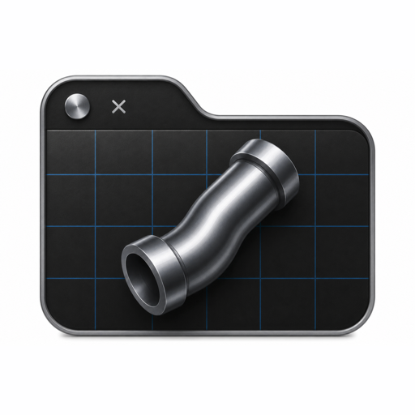

Natural-language website editing
Give the outcome. The agent reads the relevant files, proposes focused edits, and stages them for your review.

Website CommanderMac command center · iPhone + iPad companion
Website Commander turns a plain-English request into a visible, reviewable change. Connect a GitHub repo, inspect the result, and ship only what you approve.
− <h1>Welcome to my site</h1>
+ <h1>Build what matters</h1>
From request to release, every step stays visible.
READ · STAGE · REVIEW · SHIP
A safer loop
The agent handles the repetitive work while the commit boundary stays yours.
Choose a GitHub project and let Website Commander map the stack, branch, and deployment path.
Describe the outcome, from a new landing section to an SEO pass or a stubborn layout bug.
See staged file edits, risk signals, and a live preview before anything reaches your branch.
Commit when it is right, watch deployment status, and undo the last change when plans change.
See the work, not just the words
Website Commander treats every repository as real working material. Reads are free to explore. Writes are staged. Commits are an explicit decision.
Built for the whole loop
Not another chat window. A focused operating layer for sites, code, previews, providers, and releases.
Give the outcome. The agent reads the relevant files, proposes focused edits, and stages them for your review.
Render the staged site in mobile, tablet, or desktop views before it leaves the workspace.
Use OpenAI, Anthropic, Gemini, DeepSeek, Grok, Mistral, Copilot, or a compatible endpoint.
Workspaces are local clones. Open the project in VS Code and let changes flow back into the agent.
Track Cloudflare Pages, Vercel, Netlify, and other supported deployment paths without losing the thread of what changed.
The wc CLI shares the app’s settings and Keychain for agent-friendly workflows.
One system, different surfaces
The Mac app is the command center. iPhone and iPad keep the state of your sites close when you are away from the desk.
Private by design
Website Commander is built around direct connections and visible boundaries. Credentials live in the macOS Keychain. Provider calls go directly to the service you configure. Repository content is treated as untrusted input.
Read the full privacy overviewSecrets are kept in the macOS Keychain and excluded from iCloud workspace sync.
No proxy server sits between the app and your configured GitHub or AI provider.
Nothing is committed until you review and approve the staged change.
Choose your surface
One workflow across the desk and the field. Pick the build that matches where you work.
The full command center for local clones, agent runs, visual diffs, previews, and deployment status.
Download Mac release DMG · ZIP · SHA256 checksumsKeep your website command center in reach. Download the current IPA from the published release page.
Download sideloadable IPA Open Releases and choose the IPA asset for the current build.